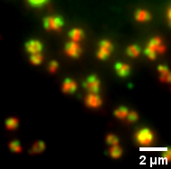

DATA SCIENCE · LIFE SCIENCES · AI
I'm Andrew, a microbiologist turned data scientist.
I use machine learning, AI and visualisation to uncover the stories hidden in data.
From protein structures to scientific language.

THE PROJECT NOTEBOOK
Selected explorations.
Practical experiments at the intersection
of science, language and data.
ABOUT ME
About Andrew
My background in microbiology shapes how I approach data: start with a question, investigate carefully, and make the result understandable.
These personal projects bring together my interests in biomedical science, machine learning, natural language processing and interactive visualisation.
Away from the keyboard, I enjoy video games, Raspberry Pi projects and bushwalking.
See what I'm building on GitHub ↗
SHARING THE FINDINGS
Selected conference posters
01 Mapping the CDK4/6 inhibitor biomarker landscape ESMO Breast Cancer · 2023
Wager K., Wang Y., Liew A., Campbell D., Fettig L., Liu F., Martini J-F., Ziaee N., Liu Y. Using bioinformatics and artificial intelligence (AI) to map the cyclin-dependent kinase 4/6 inhibitor (CDK4/6i) translational biomarker landscape. Annual ESMO Breast Cancer Congress, Berlin, Germany, 2023.
02 Why did it go viral? European ISMPP · 2023
Rawlings H., Rees T., Koti L., Pal A., Liew A. Why did it go viral? An informatics-based case study of exaggerated language in news and social media. European Meeting of the International Society for Medical Publication Professionals (ISMPP), London, UK, 2023.
03 Understanding clinical trial publication timelines Annual ISMPP · 2023
Banner S., Rees T., Liew A., Brown N., Dhanky V., Humphreys L., Naimy H., Peters D., Young F. Factors influencing pharmaceutical industry-affiliated clinical trial publication timelines. 19th Annual Meeting of ISMPP, Washington, DC, USA, 2023.